Day 1Airport to Colombo
Begin with a warm airport welcome and a first look at the capital, finishing beside the sea at Galle Face Green.
- Airport pickup
- Colombo city tour
- Galle Face Green
- Overnight in Colombo
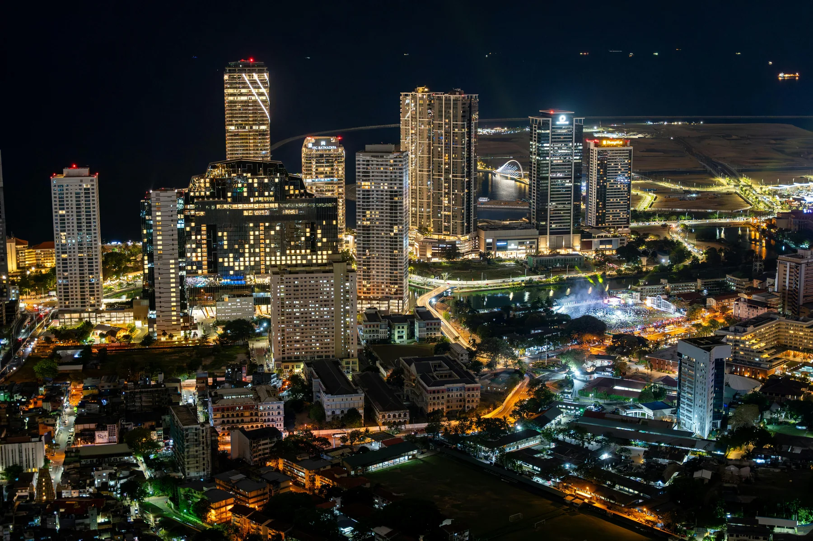
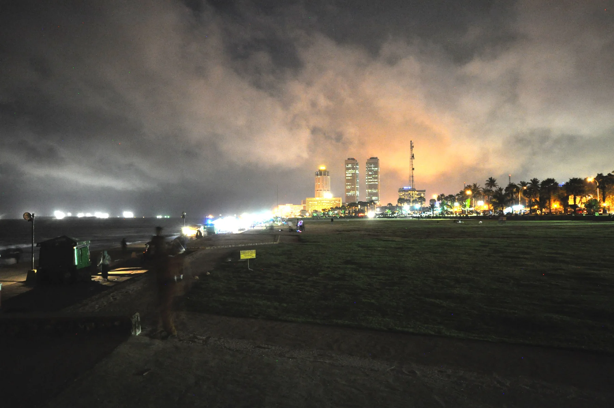
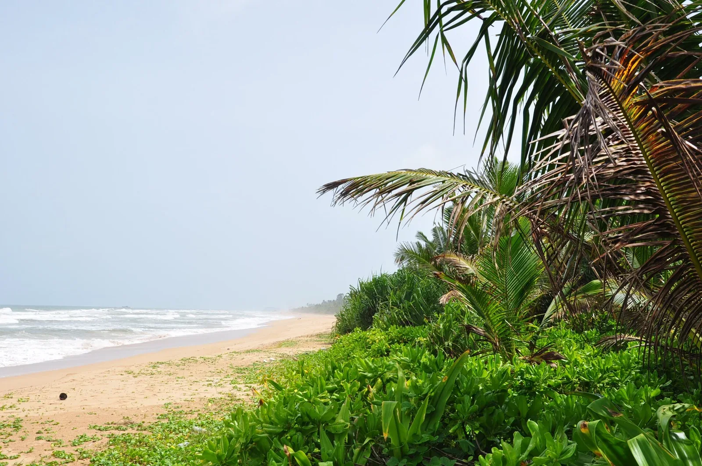
COASTAL DAYS & HILL-COUNTRY VIEWS
Colombo · Bentota · Galle · Mirissa · Hiriketiya · Ella · Udawalawe
Follow Sri Lanka’s southern coastline before turning inland for waterfalls, tea-covered hills and a wildlife safari.
DAY BY DAY
Each day can be adjusted around your pace, interests and arrival details.
Begin with a warm airport welcome and a first look at the capital, finishing beside the sea at Galle Face Green.


Head to the south-west coast for a peaceful river safari and time on Bentota Beach.
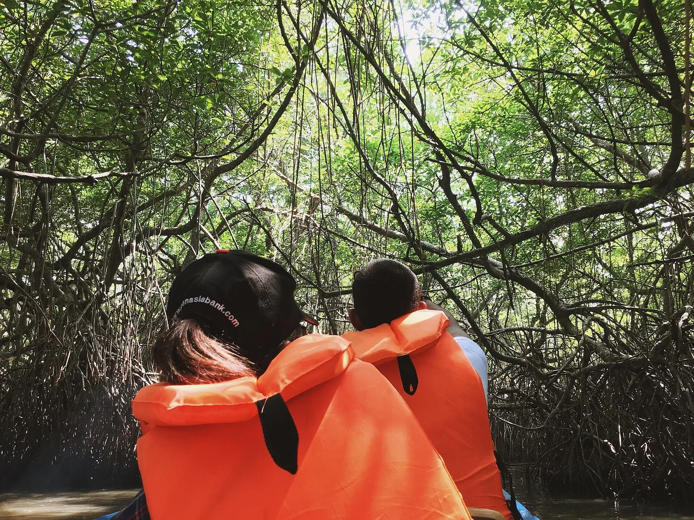
Visit a turtle conservation centre before exploring the lanes, ramparts and lighthouse of Galle Fort.
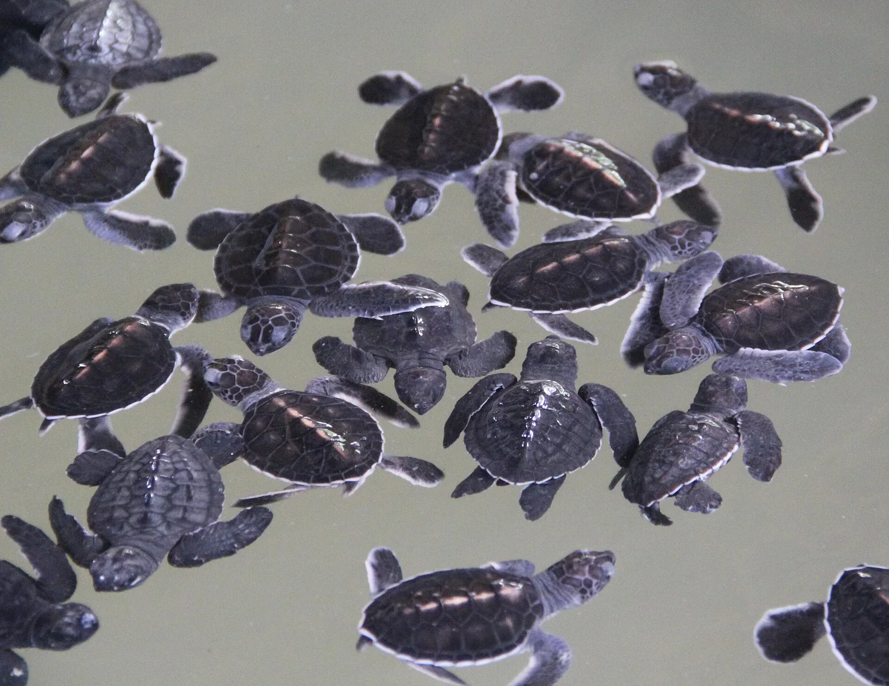

Move along the southern coast through Unawatuna and Coconut Tree Hill to Mirissa Beach.
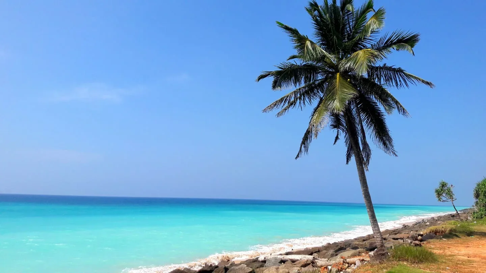
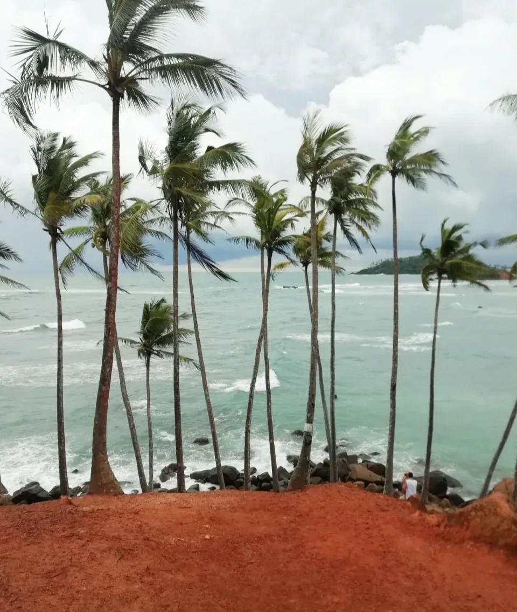
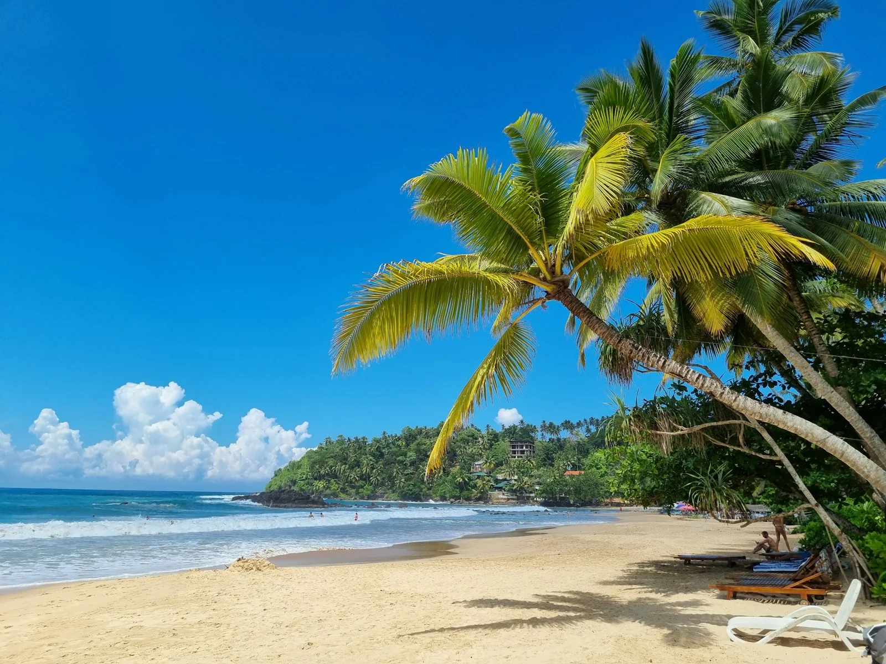
Take to the ocean for a whale-watching excursion, then keep the afternoon free for the beach and sunset.
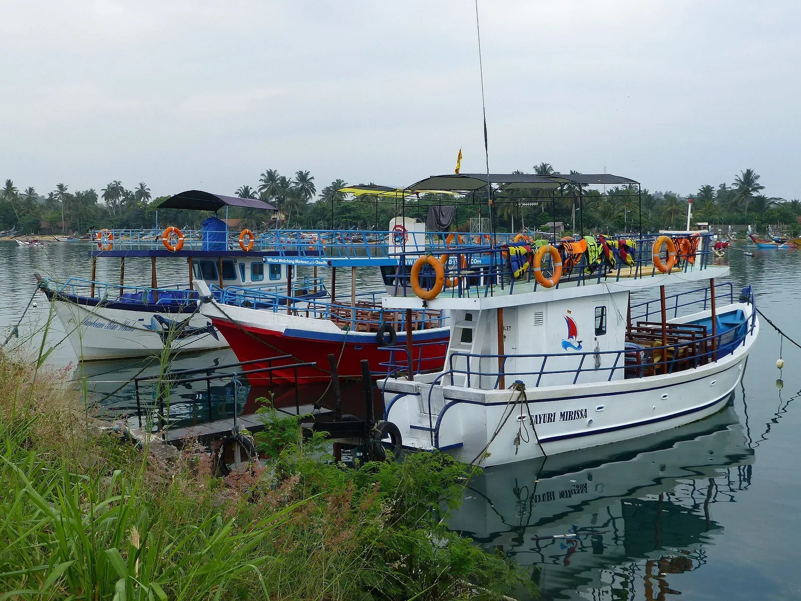
Continue east with stops at Dondra Head and Dickwella before arriving at Hiriketiya’s curved bay.
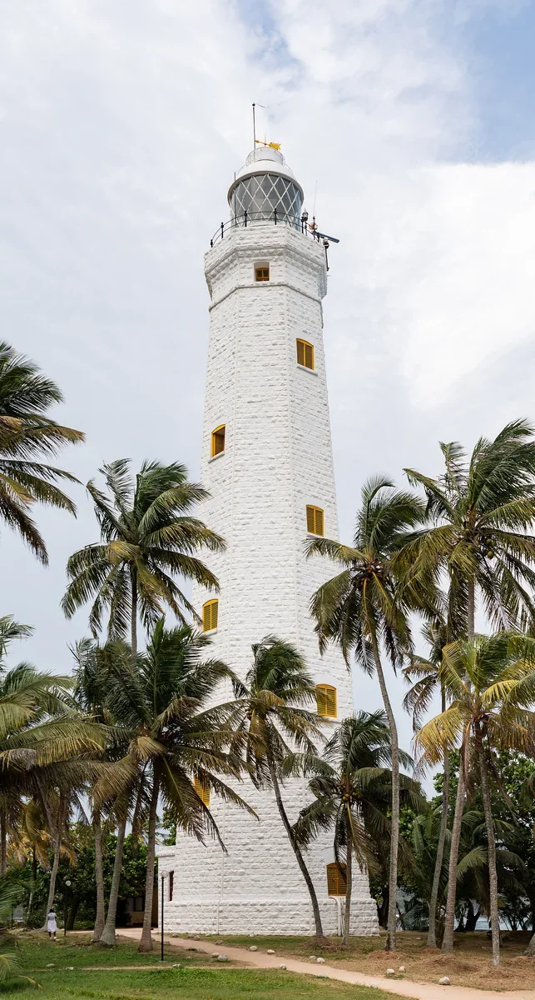
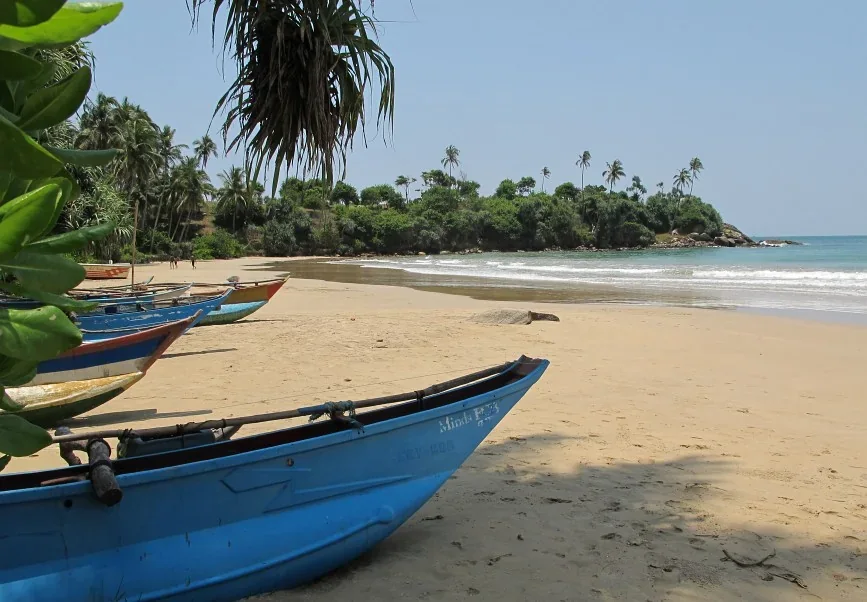

Turn north into the highlands, pausing at Ravana Falls before exploring Ella town.


Walk to viewpoints, see the Nine Arch Bridge and discover the island’s tea-growing landscapes.


Descend from the hills and join a jeep safari in Udawalawe National Park.
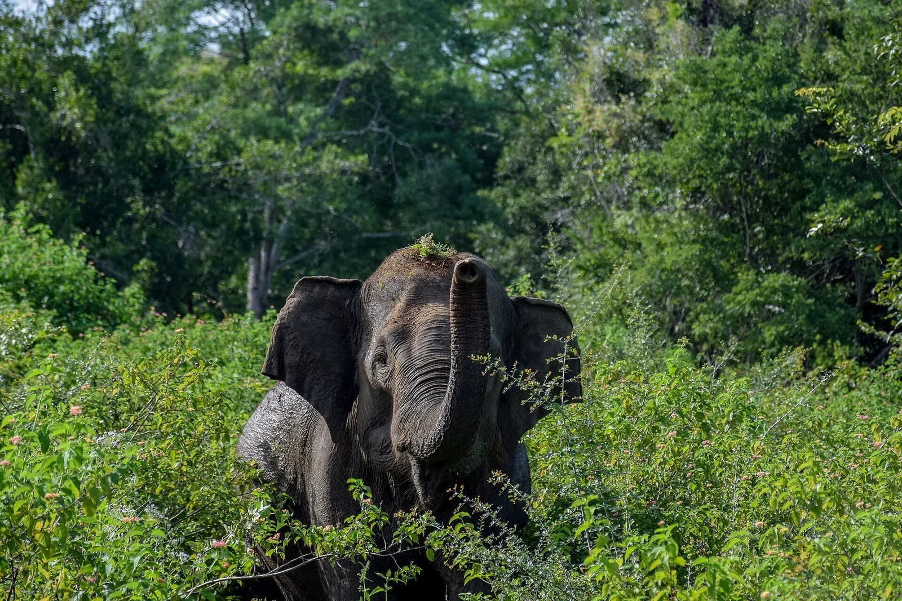
Begin the journey home, with an optional visit to the Elephant Transit Home before the airport transfer.
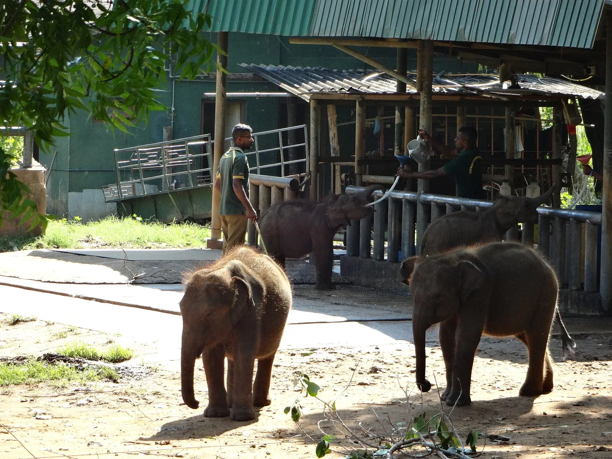
PLACES ALONG THE WAY
READY WHEN YOU ARE
Tell Nishan your dates, travel style and any changes you would love to make.
Select this journey ↗